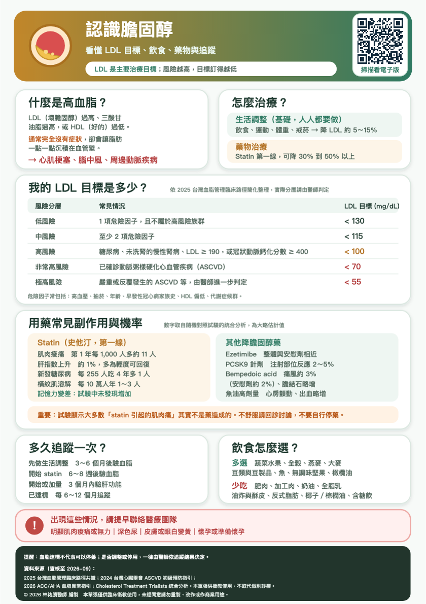

跳到內容
← 回首頁
認識膽固醇
🫀
高血脂是什麼？為什麼重要？
主題 1／9
🔊
按這裡聽本頁
↻ 從頭重播
尚未播放
膽固醇本身不是壞東西，身體需要它來製造細胞膜跟荷爾蒙。問題出在壞膽固醇，也就是 LDL，太多的時候會鑽進血管壁，慢慢堆積成斑塊。 斑塊會讓血管變窄，但更麻煩的是斑塊表面有一天可能破掉，身體以為受傷就形成血栓，把血管整個塞住，那就是心肌梗塞或腦中風。 高血脂最難的地方在於：它完全沒有症狀。不會痛、不會不舒服，所以很多人覺得自己好好的，就不想吃藥。但是血管的傷害是安靜累積好幾年的，等到有症狀的時候往往已經發生事情了。 這也是為什麼要靠抽血，而不是靠感覺。
← 上一頁
下一頁 →
下載原始 A5 衛教單
查看原始衛教圖卡

點選圖卡可開啟大圖。
原稿來源與說明
資料來源（查核至 2026 年 10 月）： 2025 台灣血脂管理臨床路徑共識；2026 ACC/AHA 血脂異常管理指引；2025 ESC/EAS 重點更新； CTT 統合分析、SAMSON 與 StatinWISE 試驗；SPORT 保健食品試驗。本單張供衛教，不取代個別診療。 © 2026 林祐賸醫師 編製 未經同意請勿重製。
1
2
3
4
5
6
7
8
9